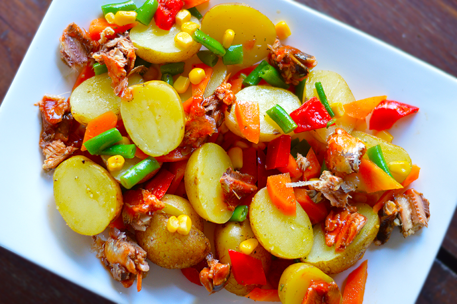

Grilled Potatoes

Grilled Potato Salad
Description
A simple and super tasty salad you can have on your menu this holiday. Its best served lukewarm than cold. This salad can work great as a starter or even an accompaniment to the main.
Ingredients
- 2 x 155 g Royal Ocean Pilchards in tomato sauce
- 700 g new potatoes
- 1/2 tsp salt
- 1/2 cup sweetcorn
- 1/2 cup carrots, chopped
- 1/2 cup green beans, chopped
- 1/2 medium red pepper, chopped
For the Dressing
- 2 tbsp cooking oil
- 2 tbsp vinegar
- 1 tbsp water
- 1/4 tsp salt
- 1/4 tsp ground black pepper
- 1/2 tsp garlic, finely chopped
Equipment
- Pot
- Bowl
- Tablespoon
- Teaspoon
Instructions
- Get your ingredients together. These include;2 x 155 g Royal Ocean Pilchards in tomato sauce
- 700 g new potatoes
- 1/2 tsp salt
- 1/2 cup sweetcorn
- 1/2 cup carrots, chopped
- 1/2 cup green beans, chopped
- 1/2 medium red pepper, chopped for the dressing
- 2 tbsp cooking oil
- 2 tbsp vinegar
- 1 tbsp water
- 1/4 tsp salt
- 1/4 tsp ground black pepper
- 1/2 tsp garlic, finely chopped
- Cut the potatoes in half and put them in a pot. Add salt and enough water that comes up 3/4 way of the potatoes. Bring to the boil until tender. Set aside in a bowl until lukewarm.
- In the meantime, prepare your carrots and green beans by steaming them for 2 mins. When done, add your red pepper and sweetcorn. Season with salt.
- Tip the vegetables into the bowl with the potatoes. Give a quick, gentle mix.
- Prepare your dressing by simply combining the ingredients together and giving a quick, vigorous whisk until the sugar dissolves.
- Pour the dressing into the potatoes and vegetables. Mix well, ensuring the potatoes and vegetables are lightly coated by the dressing.
- Separate the pilchards from the sauce. Break the pilchards onto the salad. Enjoy!